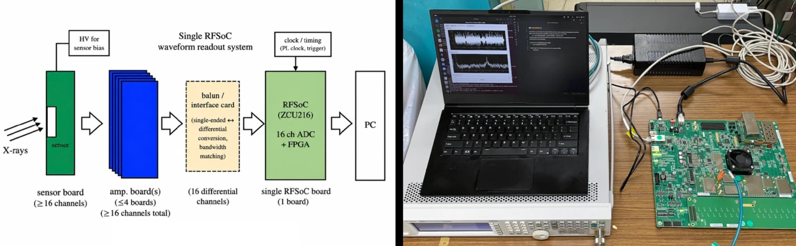
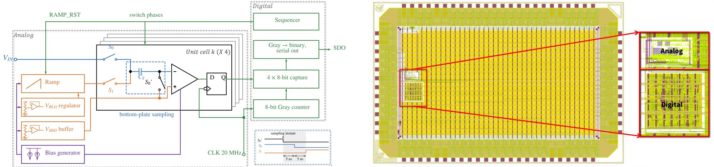
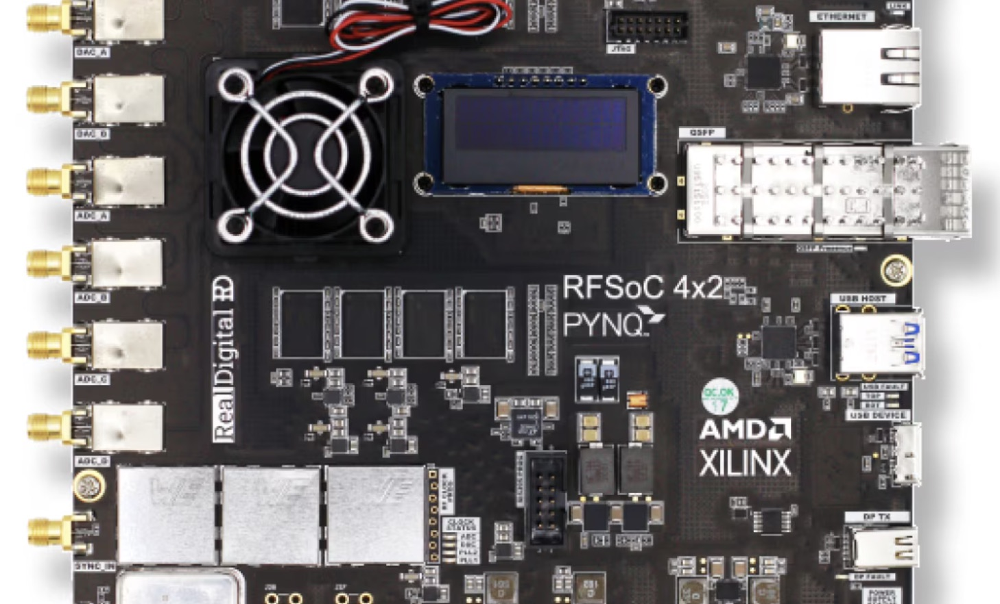
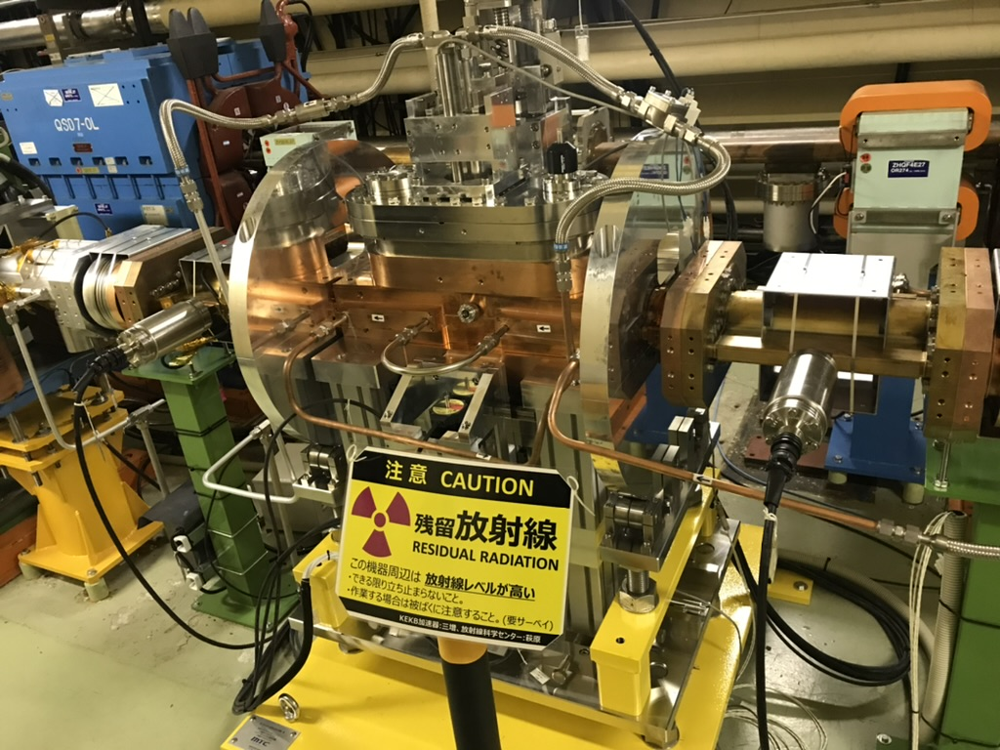
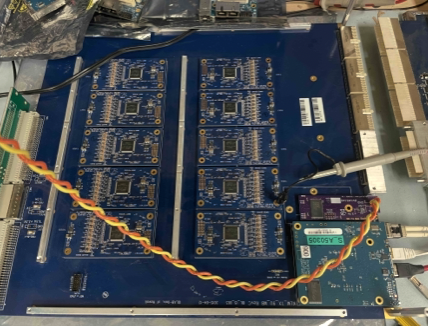
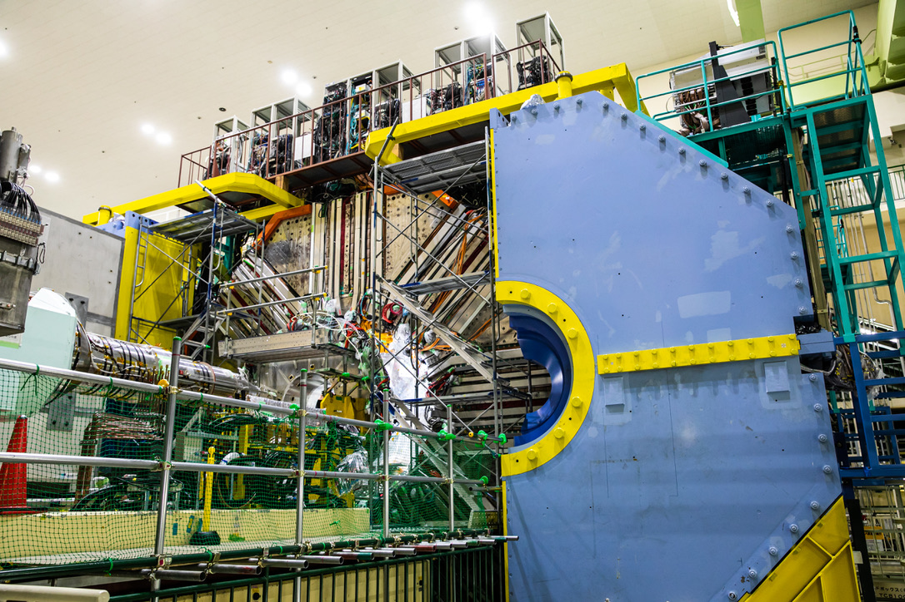

Our work connects beam diagnosis and accelerator operation, ASIC R&D, AI/ML on front-end
electronics, Belle II detector operation, and physics analysis. We develop technologies that can move from
today's Belle II systems toward future experiments.

2021-Present
Beam Diagnosis
Fast beam diagnostic systems at SuperKEKB for understanding sudden beam loss events, including BOR and XRM.
The XRM upgrade concept uses multi-channel X-ray sensor readout and RFSoC-based waveform digitization to measure fast beam-size changes.

2026-Present
ASIC R&D
An open-source waveform digitizer ASIC modeled on the IRSX, designed entirely with an open process design kit (GF180MCU) and open-source tools. The full design is public.
Vikas Kumar presented the project at CPAD 2026 as a talk and a poster, and received a poster award.

2024-Present
AI/ML on Front-End Electronics
Running AI/ML directly in detector readout hardware for low-latency decisions. We study FPGA- and RFSoC-based readout, fast-timing digitizers, and hardware-aware machine learning for future experiments.

2020-Present
Accelerator Operation: Background Mitigation and Collimator Studies
Reducing Belle II beam background with collimators at SuperKEKB, from movable-collimator tuning in the main ring to new studies of beam-transport-line collimators for injection background.

2025-Present
Belle II KLM and TOP Operation
Detector operation and hardware support for Belle II KLM and TOP systems, including readout robustness, firmware, high-background operation, and KLM TRG upgrades.

Belle II
Physics Analysis: Semileptonic BSM Searches
We are pursuing a direct search for right-handed heavy neutrinos in B->D* ℓ N decays, using semileptonic channels related to the R(D) and R(D*) anomalies. We also plan broader dark-sector searches at Belle II.